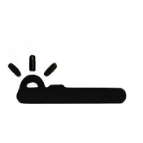
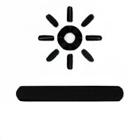
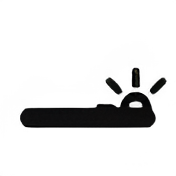

ładowanie...



Rynek Główny w Lublińcu położony jest w centrum starówki Lublińca.
Oficjalnie Plac Konrada Mańki. Nazwę tę otrzymał w 1945 roku. Odchodzą od niego ulice Edyty Stein, Józefa Lompy, Niedurnego i Cicha. Od strony południowej połączony jest z Małym Rynkiem, czyli Placem Mikołaja Kopernika (są złączone przejściem między kamienicami), a od strony północno-zachodniej z placem Cichym – zwanym Rynkiem Solnym (jest z nim złączony wąskim przejściem). W jego obrębie znajdują się sklepy oraz kawiarnie. Rynek Główny jest miejscem, w którym odbywają się liczne uroczystości i festiwale miejskie. Znajduje się na nim pomnik przyrody i pomnik św. Jana Nepomucena.